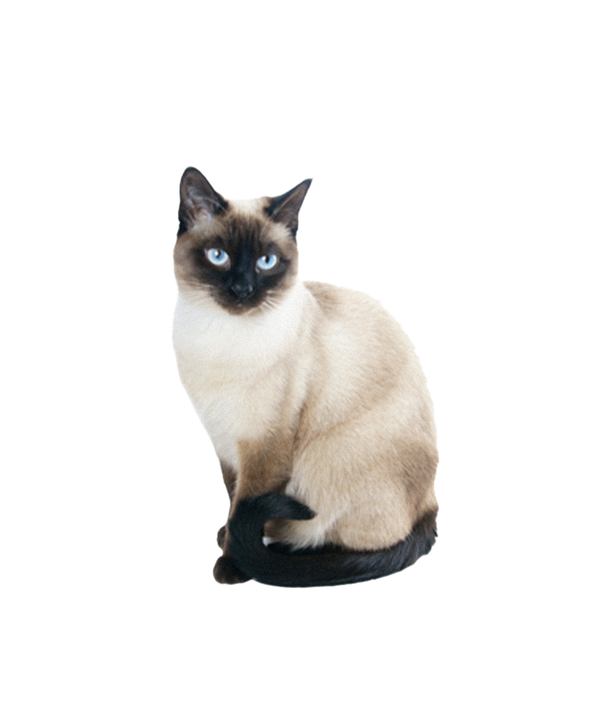
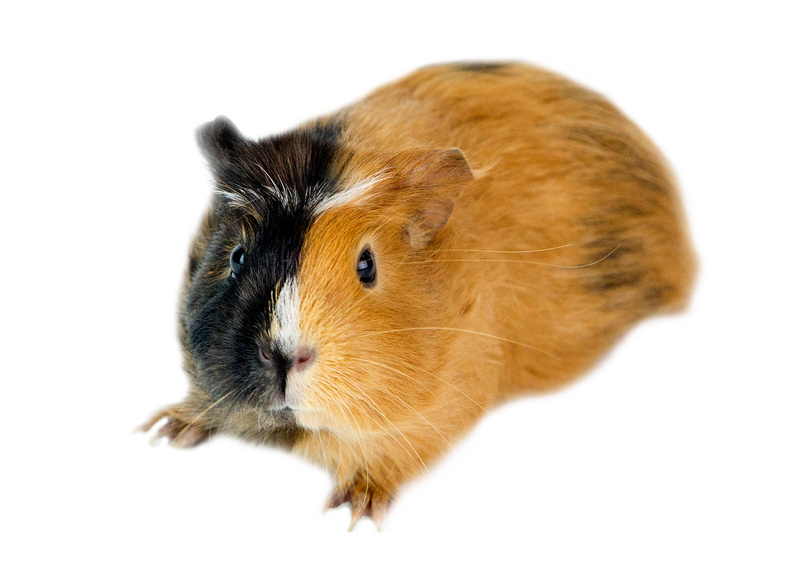

Escolha uma categoria:



Cachorros Disponíveis
Gatos Disponíveis
Mimi
Idade: 1 ano
Raça: Siamês
Curiosa e carinhosa
Castrada
Tom
Idade: 4 meses
Raça: Vira-lata
Brincalhão
Vacinas em dia
Outros Animais Disponíveis
Bilu
Idade: 6 meses
Espécie: Coelho
Muito dócil
Vive bem em ambientes fechados
Pipoca
Idade: 8 meses
Espécie: Hamster
Tranquilo e curioso
Precisa de gaiola adequada